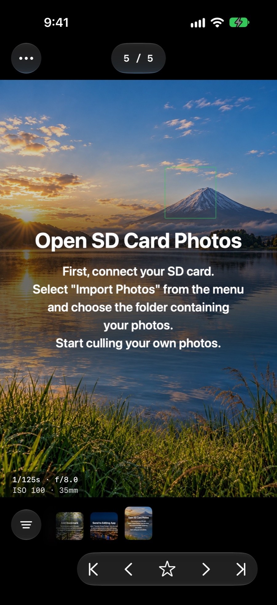
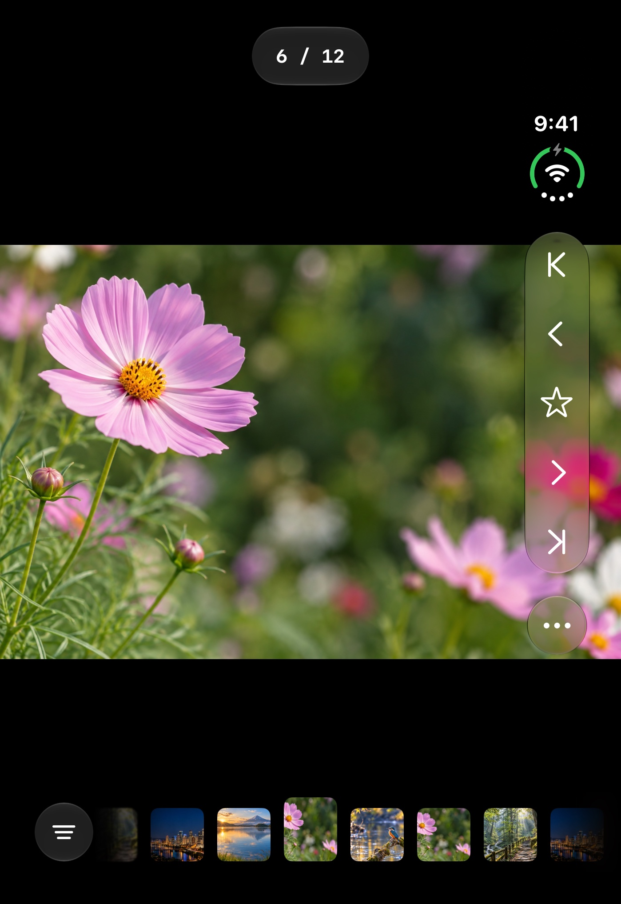
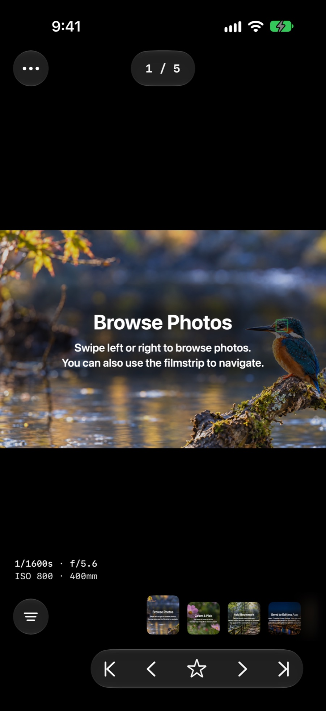
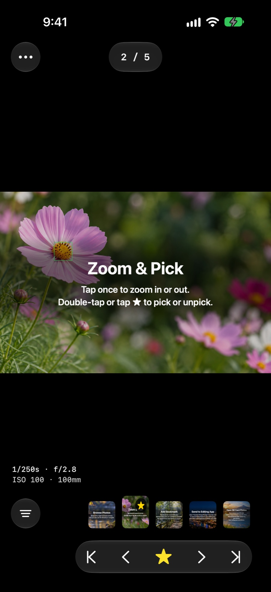
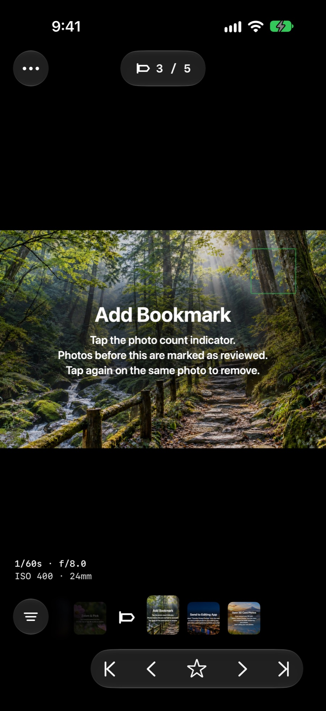
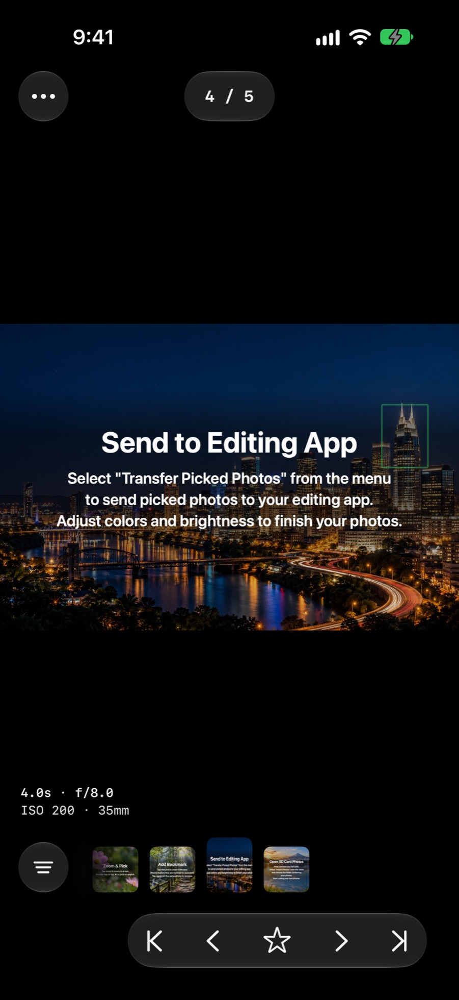

From SD card to shortlist.
Pick a folder on an SD card reader, an external SSD or your device, and start browsing right away. No import wait. RAW + JPEG pairs are shown as a single photo.

Compare photos from an SD card or external SSD at your own pace and choose the frames you want to keep. No need to wait until you're home at your computer.
Quick one-handed culling when it's closed. Inspect every detail on the wide canvas when it's open. SnaC is tuned for every iPhone Duo posture.

Fast, one-handed culling on the move.
Check fine focus on the expanded canvas.
Adjust the fold to a comfortable angle while you choose your photos.
Work side by side with other apps.
On iPad, browse frame by frame with plenty of room to check AF points. Perfect for reviewing a full day of shooting back at the hotel.
On the train, at a cafe, or right in the field. The moments when you can't open a laptop become your culling time.
Pick a folder on an SD card reader, an external SSD or your device, and start browsing right away. No import wait. RAW + JPEG pairs are shown as a single photo.

Swipe or use the filmstrip to move frame by frame, with shutter speed, aperture, ISO and the AF point right on screen.

Tap once to zoom, tap twice or hit ★ to pick. Stay zoomed on your subject's eye while you swipe through the burst, and the sharpest frame stands out.

Tap the photo counter to drop a bookmark. SnaC remembers how far you got, so you can continue on your next ride.

Use the share sheet to send your picks to an editing or file management app. Your selections are saved in standard .xmp files, ready for your desktop editor.

RAW, bursts and AF data. SnaC reads what your camera recorded and turns it into clues for finding the keeper.
SnaC reads the AF area from Sony Alpha MakerNote data and overlays it on the photo, so you know whether the eye is sharp before you even zoom.
Consecutive shots are grouped automatically on the filmstrip. Jump between bursts or step through them frame by frame.
Picks are saved to standard .xmp sidecars in the same folder.
Browse photos straight from an SD card or external SSD without copying them first.
Filter to your picks, then use the share sheet to send them to a compatible app.
Loading, analysis and saving all happen on your device. No photos or metadata are ever uploaded.
No. Picks are written to standard .xmp sidecar files (xmp:Rating) in the same folder as your originals. Your RAW and JPEG files are never changed.
JPEG files are scanned regardless of camera brand. For RAW, SnaC supports Sony .ARW files. AF point overlays and burst grouping work with photos that contain compatible Sony Alpha shooting data.
Yes. A tutorial with bundled sample photos starts on first launch, so you can try browsing, zooming, picking, bookmarking and sending to an editor right away.
No. All loading and analysis happens on your device, and nothing is sent to external servers. See the Privacy Policy for details.
Finish culling on the ride home. Save your desk time for editing.